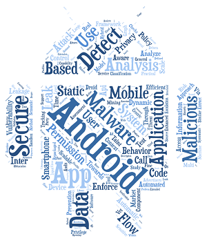
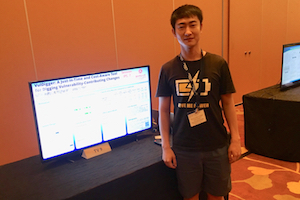
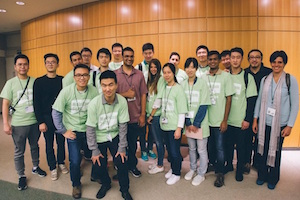

|
Sen Chen Research Assistant Nanyang Technological University, Singapore East China Normal University, China ecnuchensen AT gmail.com chensen AT ntu.edu.sg |  |
 17 Dec 2018: One full paper "A Large-Scale Empirical Study on Industrial Fake Apps" accepted by ICSE 2019 SEIP! Congratulations to Chongbin! (Acceptance rate: 22.2% = 30/135)
17 Dec 2018: One full paper "A Large-Scale Empirical Study on Industrial Fake Apps" accepted by ICSE 2019 SEIP! Congratulations to Chongbin! (Acceptance rate: 22.2% = 30/135)
12 Dec 2018: One research paper "StoryDroid: Automated Generation of Storyboard for Android Apps" accepted by ICSE 2019 Research Track! (Acceptance rate: 20.6% = 109/521)
Sen Chen is a final year Ph.D. student focusing primarily on areas of mobile security/testing (e.g., Android/iOS malware/vulnerability detection and Android bug detection) and AI security/testing (e.g., DL model robustness and DL framework/platform analysis). He received an ACM SIGSOFT Distinguished Paper Award at ICSE 2018. I'm currently advised by Professor Lihua Xu (NYU Shanghai).
I am also a Research Assistant at SCSE of NTU in October 2016 to June 2019. During my visit in NTU, I am advised by Professor Liu Yang.
I'm currently advised by Professor Lihua Xu (NYU Shanghai).
I am also a Research Assistant at SCSE of NTU in October 2016 to June 2019. During my visit in NTU, I am advised by Professor Liu Yang.
My research focuses on developing effective techniques and tools to improve mobile app/AI security and quality: Mobile APP Security: Android Malware Detection: StormDroid (AsiaCCS'16), Begonia (CCS'16) Adversarial Malware Detection: KuafuDet (MobiCom'16, Computers & Security'17, SANER'19) Android Vulnerability Detection: AUSERA (ESEC/FSE'18, TDSC'19) Android Grayware Detection: GrayDet ('19) Android Fake App Analysis: Ecosystem and Trend (ICSE'19) Android GUI Attack: GUI-Squatting Attack (TDSC'19) iOS App Security ('19) Mobile APP Analysis and Development: Android App Development (competitive analysis and code review): StoryDroid (ICSE'19) Android Code Generation: Cross-Platform GUI Code Generation (SANER'19) Android App Exception Analysis: Exlocator (ICSE'18) Android Aysnc Programming Errors Detecction: APEChecker (ASE'18) Formal Verification: Eunomia (APSEC'16) AI Testing and Analysis: DL Frameworks and Platforms Testing ('19) ML Model Attacks and Defenses on Websites ('19)
Android Malware: I worked on Android malware detection and classification (StormDroid) using machine learning (both static and dynamic features with statistical metrics) (refer to AsiaCCS'16). I've developed KuafuDet (refer to MobiCom'16, Computers & Security'17) for Android malware detection using machine learning in adversarial environment. We examine how machine-learning classifiers (e.g., DroidAPIMiner, DREBIN, and MaMaDroid) can be misled under different threat models.
Android Vulnerability: I worked on security vulnerability detection (AUSERA) in security-critical FinTech applications (e.g., mobile banking apps and payment apps). We investigated the characteristics of these vulnerabilities, and the changing trend over time (refer to ESEC/FSE'18, TDSC'19).
Android App Development: We proposed a system, StoryDroid (refer to ICSE'19), to automatically generate the storyboard for Android apps, and assist different roles to review apps efficiently. Specifically, it extracts the activity transition graph and leverages static analysis techniques to render UI pages to visualize the storyboard with the rendered pages. The mapping relations between UI pages and the corresponding implementation code (e.g., layout code, activity code, and method hierarchy) are also provided to users. Such a storyboard benefits different roles (i.e., PMs, UI designers, and developers) in the app development process.
Android App Analysis/Testing: We conducted a large-scale empirical study to characterize framework-specific exceptions in Android apps, and implemented ExLocator (refer to ICSE'18), an exception localization tool, for Android applications. We proposed APEChecker (refer to ASE'18), a technique to efficiently manifest aysnc programming errors (APEs) in Android apps.
Ph.D. Student, East China Normal University, September 2014 - June 2019
Research Assistant, SCSE, NTU, January 2018 - June 2019
Visiting Ph.D. Student, SCSE, NTU, October 2016 - December 2017
14. Sen Chen, Lingling Fan, Chunyang Chen, Ting Su, Wenhe Li, Yang Liu, and Lihua Xu, "StoryDroid: Automated Generation of Storyboard for Android Apps", In Proceedings of the 41st ACM/IEEE International Conference on Software Engineering (ICSE2019), Montréal, QC, Canada, 2019. (109/529 = 20.6%)
13. Chongbin Tang, Sen Chen#, Lingling Fan, Lihua Xu, Yang Liu, Zhushou Tang and Liang Dou. "A Large-Scale Empirical Study on Industrial Fake Apps", In Proceedings of the 41st ACM/IEEE International Conference on Software Engineering (ICSE2019), Software-Engineering-in-Practice Track (SEIP), Montréal, QC, Canada, 2019. (35/135 = 22.2%) (# Co-first Author)
12. Sen Chen, Lingling Fan, Ting Su, Lei Ma, Yang Liu and Lihua Xu. "Automated Cross-Platform GUI Code Generation for Mobile Apps", In Proceedings of the 26st IEEE International Conference on Software Analysis, Evolution, and Reengineering (SANER2019), AI4Mobile, Hangzhou, China, 2019
11. Sen Chen, Minhui Xue, Lingling Fan, Lei Ma, Yang Liu and Lihua Xu. "How Can We Craft Large-Scale Mobile Malware? An Automated Poisoning Attack", In Proceedings of the 26st IEEE International Conference on Software Analysis, Evolution, and Reengineering (SANER2019), AI4Mobile, Hangzhou, China, 2019.
10. Lei Ma, Felix Juefei-Xu, Minhui Xue, Qiang Hu, Sen Chen, Bo Li, Yang Liu, Jianjun Zhao, Jianxiong Yin and Simon See, "Secure Deep Learning Engineering: A Software Quality Assurance Perspective".
9. Sen Chen, Ting Su, Lingling Fan, Guozhu Meng, Minhui Xue, Yang Liu, and Lihua Xu, "Are Mobile Banking Apps Secure? What Can be Improved?", In Proceedings of the 26th ACM Joint European Software Engineering Conference and Symposium on the Foundations of Software Engineering (ESEC/FSE2018), Lake Buena Vista, Florida, United States, 2018
8. Lingling Fan, Ting Su, Sen Chen, Guozhu Meng, Yang Liu, Lihua Xu and Geguang Pu, "Efficiently Manifesting Asynchronous Programming Errors in Android Apps", In Proceedings of the 33rd IEEE/ACM International Conference on Automated Software Engineering (ASE2018), Montpellier, France, 2018. (69/346 = 19.9%)
7. Sen Chen, Guozhu Meng, Ting Su, Lingling Fan, Minhui Xue, Yinxing Xue, Yang Liu, and Lihua Xu, "AUSERA: Large-Scale Automated Security Risk Assessment of Global Mobile Banking Apps".
Highlight:
(1) Until now, 21 banking entities have confirmed 126 weaknesses, 52 weaknesses have been patched. Our work has also received positive feedback and improved their security policies.
(2) won Research Tool Award in NASAC 2018 (National Software Application Conference) held by CCF.
6. Lingling Fan, Ting Su, Sen Chen, Guozhu Meng, Yang Liu, Lihua Xu, Geguang Pu and Zhendong Su, "Large-Scale Analysis of Framework-Specific Exceptions in Android Apps", In Proceedings of the 40th International Conference on Software Engineering (ICSE2018), Gothenburg, Sweden, 2018. (105/502 = 20.9%)
Highlight:
(1) ACM SIGSOFT Distinguished Paper Award
(2) Dataset of Android Exceptions
Statistics of Dataset Access
Award
Press
5. Sen Chen, Minhui Xue, Lingling Fan, Shuang Hao, Lihua Xu, Haojin Zhu, and Bo Li, "Automated Poisoning Attacks and Defenses in Malware Detection System: An Adversarial Machine Learning Approach", In Proceedings of the Elsevier Computers & Security, 2017. (Accepted) Highlight: Dataset of Android Malware
4. Lingling Fan, Sen Chen, Lihua Xu, Zongyuan Yang, Huibiao Zhu, Model-Based Continuous Verification, In Proceedings of the IEEE ASIA-Pacific Software Engineering Conference (APSEC2016), Hamilton, New Zealand, 2016. (acceptance rate: 19.7%)
3. Sen Chen, Minhui Xue, Zhushou Tang, Lihua Xu, and Haojin Zhu, "StormDroid: A Streaminglized Machine Learning-Based System for Detecting Android Malware", In Proceedings of the ACM Asia Conference on Computer and Communications Security (AsiaCCS2016), Xi'an, China, 2016. (acceptance rate: 20.9%)
Highlight:
Statistics of Dataset Access
2. Sen Chen, Minhui Xue, Lihua Xu, "Towards Adversarial Detection of Mobile Malware", In Proceedings of the Annual International Conference on Mobile Computing and Networking (MobiCom2016), New York, USA, 2016.
1. Lingling Fan, Minhui Xue, Sen Chen, Lihua Xu, Haojin Zhu, "Accuracy vs. Time Cost: Detecting Android Malware through Pareto Ensemble Pruning", In Proceedings of the ACM Conference on Computer and Communications Security (CCS2016), Vienna, Austria, 2016.
Outstanding Graduate Student of Shanghai, April 2019.
NASAC 2018 Research Tool Award, CCF, November 2018
FSE 2018 GAPS Award, ACM/SIGSOFT, September 2018
ACM SIGSOFT Distinguished Paper Award, May, 2018
University-level Outstanding Student, ECNU, China, December 2017
Graduate Student Visiting Scholarship, Singapore, February 2017
MobiCom 2016 GAPS Award, ACM/SIGMOBILE, August 2016
Graduate Student Overseas Visiting Scholarship, China, June 2016
University-level Outstanding Student, ECNU, China, December 2015
First Class Excellent Undergraduate Scholarship, October 2013
University-level Outstanding Student, October, 2013
National Scholarship, The Ministry of Education, China, October 2012
10. StoryDroid: Automated Generation of Storyboard for Android Apps, ICSE'19, Montréal, QC, Canada, May 2019 9. How Can We Craft Large-Scale Mobile Malware? An Automated Poisoning Attack, AI4Mobile'19, Hangzhou, China, February 2019 8. AUSERA: An Automated Tool for Security Risk Assessment of Mobile Banking Apps, NASAC'18, Shenzhen, China, November 2018 7. Are Mobile Banking Apps Secure? What Can Be Improved? ESEC/FSE'18, FL, USA, November 2018 6. Automated Semantic-risk Assessment for Financial Apps, OCBC Bank, Singapore, January 2018 5. VulDigger: A Just-in-Time and Cost-Aware Tool for Digging Vulnerability-Contributing Changes, GLOBECOM'17, Singapore, December 2017 4. A Semantic-Based Analysis of Android Malware for Detection, SICW GovWare, Singapore, September 2017 3. Towards Adversarial Detection of Mobile Malware, MobiCom'16, New York, USA, October 2016 2. Machine Learning-Based Approach for Android Malware Detection, NTU, Singapore, October 2016 1. A Streaminglized Machine Learning-Based System for Detecting Android Malware, AsiaCCS'16, Xi'an, China, June 2016
Android Engineer -SOHU, Beijing, China - February to September, 2014
-Android application development and Android UI analysis
JAVA Engineer -UFIDA, Beijing, China - March to July, 2013
-Software application development and testing
-Reviewers and PC members
Reviewer for the Journal of IEEE Transactions on Information Forensics and Security (TIFS 2018, 2019)
PC member for the 1st IEEE International Workshop on Artificial Intelligence for Mobile (AI4Mobile 2019)
-Co-Reviewers
ISSTA 2018, ASE 2018, USENIX Security 2018, 2019, CCS 2018, 2019, Oakland 2018, 2019, ESEC/FSE 2019, ASE 2019
-Student Volunteer
The Annual International Conference on Mobile Computing and Networking (MobiCom 2016)
 
 |
visits since 15/04/2019 Last updated on 15/02/2019 |
|---|
 Copyright @senchen
Copyright @senchen